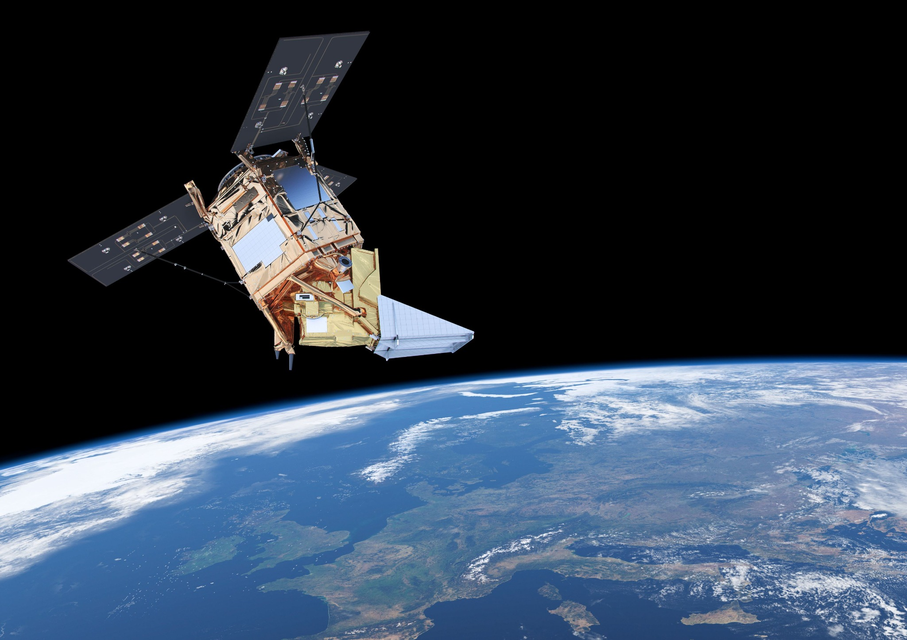

Earth observation
Clouds, aerosols, air quality, and radiative transfer in satellite data
Clouds are strong regulators of the Earth's radiative balance and play a key role in the hydrological cycle by controlling precipitation and evaporation. Air quality is shaped by short-lived trace gases such as O3 and NO2, and by aerosols that affect human health, visibility, weather, and climate.
Satellite observations are essential because they provide consistent information over large parts of the globe. KNMI is not only a weather institute, but also a leading centre for monitoring air quality, clouds, aerosols, ozone, winds, and radiation from space. Its satellite observation work includes calibration and retrieval algorithms, data processing, and products from missions such as OMI, TROPOMI, GOME-2, SEVIRI, and EarthCARE.
During my PhD at TU Delft and KNMI, I developed DARCLOS to detect cloud shadows in TROPOMI data and a method to recover satellite measurements during solar eclipses. These methods help interpret scenes where the measured radiation field is shaped by three-dimensional clouds, aerosols, and shadows. The eclipse correction also made it possible to study how shallow cumulus clouds respond when sunlight is temporarily reduced.